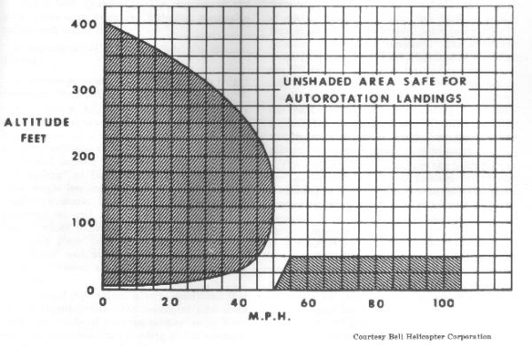

Pilots are responsible for knowing all pertinent
information for each helicopter they fly. The helicopter flight manual
is designed to provided pilots with a general knowledge of the particular
helicopter and the information necessary for safe and efficient operation.
Its function is not to teach a pilot to fly, but rather to provide the
best possible operating instructions under most circumstances. It is not
intended as a substitute for sound judgment; emergencies or other
unforeseen situations may require modification of the procedures. A
thorough understanding of the contents of helicopter flight manual will
enable pilots to complete flights with maximum efficiency and safety.
A helicopter flight manual accompanies each
certificated helicopter. Although the manual for a particular helicopter
may contain much information identical to that contained in the flight
manual for other helicopters of the same make and model, it may also
contain information which is peculiar only to that helicopter, especially
weight and balance information. Helicopter flight manuals are prepared
and furnished by the manufacturers. Much of the information in them is
required by Federal Aviation Regulation, Part 27, Airworthiness Standards:
Normal Category Rotorcraft. However, manufacturers often include additional
information that is helpful to the pilot but which is not required.
When the helicopter flight manual contains information
required by regulations that does not appear as placards in the helicopter,
the manual must be carried in the helicopter at all times. The statement:
"This document must be carried in the aircraft at all times" will
appear somewhere on the manual if such conditions exist.
The information required by regulations to be included
in the helicopter flight manual is generally listed as follows under
chapters, sections, headings, or some similar breakdown:
Operating Limitations
Operating Procedures
Performance Information
All important operating limitations that must be observed during normal operations are covered in this portion of the flight manual. This includes airspeed and rotor limitations, powerplant limitations, weight and loading distribution, flight crew, type of operation, and unusable fuel if the unusable supply in any tank exceeds 1 gallon or 5 percent of the tank capacity. A brief discussion of each of these, along with actual examples excerpted from various FAA-approved helicopter flight manual follows.
Airspeed limitations .--Required information includes those limiting airspeed which must be shown on the airspeed indicator by a color coding or must be displayed in the form of a placard. A red radial line must be placed on the airspeed limit beyond which operation is dangerous (never-exceed speed Vne); a yellow arc is used to indicate cautionary operating ranges; and a green arc is used to indicate safe or normal operating ranges. Here are excerpts from this portion of various helicopter flight manuals:
| Vne 100 MPH from sea level to 2000 feet. | ||||
| Above 2000 feet, decrease Vne 3 MPH per 1000 feet. | ||||
| ||||
| Vne 105 MPH sea level to 6000 feet. | ||||
| Above 6000 feet, decrease Vne 5 MPH per 1000 feet. |
This information is sometimes given in the form of a chart (fig. 39).
Rotor limitations .--Required information in this section of the manual includes limiting rotor RPM's and cautionary ranges. These limitations are marked on the tachometer by red radial lines and yellow arcs respectively, with normal operating ranges marked with a green arc. Here are excerpts from two helicopter flight manuals:
| Maximum 370 RPM; minimum 333 RPM. | ||||
| ||||
| Maximum 500 RPM for 248-40, -46, -53 blades. | ||||
| Maximum 472 RPM for 248-100, and -101 blades. | ||||
| Minimum 400 RPM. |
In the latter case, pilots must know the type of rotor blade used on their particular helicopter.
Powerplant limitations .--Information contained in this portion must explain all powerplant limitations and the required markings on the powerplant instruments. This will include such items as fuel octane rating, idling RPM, operating RPM, manifold pressure, oil pressure, oil temperature, cylinder head temperature, fuel pressure, mixture control, and others. See figure 40 for information contained in one flight manual concerning instrument markings.
Weight and loading distribution .--This section must include rotorcraft weights and center-of-gravity limits, together with the items of equipment on which the empty weight is based. This will generally require the inclusion of a chart or graph such as that illustrated in figure 41 from which the pilot can compute the center-of-gravity position for any given loading situation. (See weight and balance information for instructions on the use of this chart.)
Flight crew.-- When a flight crew of more than one is required, the number and functions of the minimum flight crew will be described.
Type of operation.--Examples of statements appearing in helicopter flight manuals for light helicopters are:
Basic configuration of the helicopter permits its use as a two-place aircraft. The basic helicopter is approved for VFR operations.
Basic configuration of the helicopter permits its use as a three-place aircraft.
Unusable fuel .--If the unusable fuel supply in any tank exceeds 1 gallon or 5 percent of the tank capacity, whichever is greater, a warning shall be provided to indicate to the flight personnel that when the quantity indicator reads zero the remaining fuel in the tank cannot be used for flight.
This section of the manual contains information concerning normal and emergency procedures, takeoff and landing procedures, appropriate airspeeds peculiar to the rotorcraft's operating characteristics, and other pertinent information necessary for safe operation. This section may include, but not necessarily all, the following procedures: a preflight checklist; before starting engine, starting, warmup, and shutdown procedures; inflight procedures; and such emergency procedures as engine failure, tail rotor failure, hydraulic boost failure, ditching with and without power, and others. The following is an excerpt from one flight manual on the emergency procedure to use in case of engine failure.
| 1. | Engine failure while hovering or on takeoff below 10 feet: A power failure is indicated by a sudden yawing of the ship to the left. In the event of such failure, do not reduce collective pitch. Apply right pedal to prevent excessive yawing. Apply collective pitch as necessary in order to cushion landing. | ||||||||||||
| 2. | Engine failure during takeoff: altitude above 10 feet, below 500 feet: Caution: To effect a safe autorotation landing in the event of engine failure, takeoff operation should be conducted in accordance with the restrictions shown on Height- Velocity diagram. In the event of power failure during takeoff, the collective pitch must be initially lowered in order that the rotor speed may be maintained. The amount and duration of collective reduction depends upon the height above the ground at which the engine failure occurs. As the ground is approached, back cyclic and collective should be used as needed to decreased forward and vertical velocity. Ground contact should be established in a level attitude. | ||||||||||||
| 3. |
Engine failure above 500 feet altitude:
|
The emergency procedure just given is excerpted from the helicopter flight manual for one model of helicopter and should be used only for that particular model. Check the helicopter flight manual for each model of helicopter you fly to obtain the procedure to use in case of engine failure.
This section should include information concerning (1) steady rates of climb and hovering ceilings together with the corresponding airspeeds and other pertinent information, including the calculated effect of altitude and temperature; (2) maximum wind allowable for safe operation near the ground; and (3) sufficient information to outline the limiting heights and corresponding speeds for safe landing after power failure.
The chart in figure 42 is an example taken from one manual from which rates of climb and best rate of climb airspeed can be computed. It can be used to compute the rate of climb for various density altitudes. The steps are as follows:
| 1. | Compute the density altitude for the temperature/pressure altitude conditions by using a density altitude chart (fig. 51). Some flight manuals contain density altitude charts. | |||||||
| 2. | Locate the resulting density altitude along the left side of the chart (fig, 42), move horizontally from this point to the diagonal line, then vertically downward to the bottom line where the rate of climb in feet per minute is read. For example, if the computed density altitude is 1,000 feet, the rate of climb should be 1,250 feet per minute. | |||||||
| 3. | The best rate of climb airspeed can be found by moving horizontally from the density altitude point to the diagonal line in the chart on the right side, then moving vertically downward to the bottom line where the airspeed giving the best rate of climb in miles per hour can be read. In the example given in 2 above, it is approximately 57 MPH. At a density altitude of 8,500 feet, the best rate of climb airspeed is approximately 50 MPH and the rate of climb is approximately 425 feet per minute. Maximum allowable wind for safe operations near the surface will be noted by a statement in most flight manuals similar to the following (excerpted from two helicopter flight manuals); | |||||||
| Rearward flight or hovering downwind can be conducted up to speeds of 23 MPH IAS. Maximum possible operating wind velocities have not been established. | ||||||||
| ||||||||
| the maximum wind in which crosswind takeoffs and landings and tail-into-the-wind hovering is safe is 20 MPH; however, this is not to be considered the limiting value for flight as normal takeoffs, landings, and other maneuvers made close to the ground which do not require turning more than 45 degrees out of the wind may be made in much higher winds with the upper limit depending on experience and skill of the pilot. |
Limiting heights and corresponding speeds for safe landing after power failure are generally incorporated in a chart called the Airspeed vs. Altitude Limitations Chart, but often referred to as the Height-Velocity Curve or Diagram. This chart generally appears in the performance section of the helicopter flight manual, but occasionally may be found in the Operating Limitations section. Figures 43 and 44 represent such charts. These charts will be discussed in detail in a latter chapter.

Figure 44.--Airspeed vs. altitude limitations chart.
All helicopters will generally have one or more
placards displayed in conspicuous places that have a direct and important
bearing on safe operation of the helicopter. These placards will generally
appear in the helicopter flight manual in the Operating Limitations section
under the heading of "Placards." Here are some examples from
various flight manuals:
The following placard is installed on the baggage
compartment door.
MAXIMUM BAGGAGE WEIGHT 50
POUNDS. SEE FLIGHT MANUAL FOR
WEIGHT AND BALANCE DATA.
* * *
THIS HELICOPTER TO BE OPER-
ATED IN COMPLIANCE WITH THE
OPERATING LIMITATIONS SPECI-
FIED IN THE FAA-APPROVED RO-
TORCRAFT FLIGHT MANUAL.
* * *
SOLO FLIGHT PROHIBITED FROM
LEFT SEAT.
A thorough understanding of the contents of the
helicopter flight manual for the helicopter you fly will enable you to
complete flights with maximum efficiency and safety.
{kind=link}